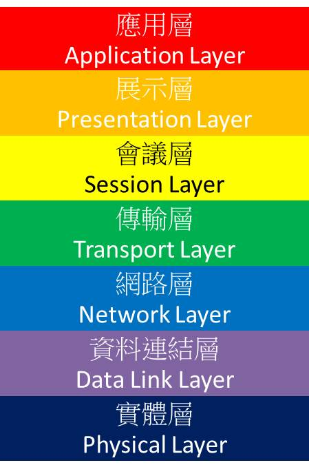

OSI七層架構
OSI 七層架構

OSI (Open System Interconnection Reference Model)是由國際標準化組織(ISO)針對網路架構互連所頂定的一個標準。依據網路運作的方式，將OSI分成七層，由下往上分別為
實體層(Physical Layer)
連結層(Data Link Layer)
網路層(Network Layer)
傳輸層(Transport Layer)
會議層(Session Layer)
展示層(Presentation Layer)
應用層(Application Layer)
分層説明
第一層-實體層(Physical Layer)
實體層是七層架構最底部的一層，主要的功用就是實體線路的傳輸，透過物理線材傳遞0與1的電子訊號，使其形成網路。在實體層中的規範包含了規格、傳輸速度等等，用來確保訊號可以在不同的物理媒介上進行傳輸。
乙太網 數據機 電力線通訊 同步光網路 G.709 光導纖維 同軸電纜 雙絞線
第二層-連結層(Data Link Layer)
負責網路尋址、錯誤偵測和改錯。將資料封裝成資料訊框(Data frame)並包含MAC Address，讓資料在傳輸的時候，可以明確地找到傳輸的目的地，這組Address是獨一無二的。
WiFi ARP 乙太網路 PPP PPPoE
第三層-網路層(Network Layer)
提供路由和尋址的功能，使兩終端系統能夠互連且決定最佳路徑，並具有一定的擁塞控制和流量控制的能力 (By Wiki)，給予IP Address，讓封包在傳輸時得以知道誰是接收者
IPv4 IPv6 ICMP IGMP
第四層-傳輸層(Transport Layer)
提供協定，使兩端可以成功彼此進行通訊
TCP UDP
第五層-會議層(Session Layer)
負責建立網路連線並等候資料傳輸結束時，切斷連線
這層與第六層展示層定義較為模糊，其功能在應用層也皆被實作
第六層-展示層(Presentation Layer)
將上層的資料轉換成正確的語法，如ASCII以及UTF-8
這層與第五層-會議層定義較為模糊，其功能在應用層也皆被實作
第七層-應用層(Application Layer)
與使用者所接觸的的介面做結合，提供使用者簡單地進行網路服務
DHCP HTTP FTP DNS
資料參考來源
wiki - https://zh.wikipedia.org/wiki/OSI%E6%A8%A1%E5%9E%8B
什麼是OSI的7層架構？和常聽到的Layer 7有關？- https://www.ithome.com.tw/node/47085
http://blog2.cyhs.tp.edu.tw/teacher/get/107/OSI_Network.pdf
转载请注明来源，欢迎对文章中的引用来源进行考证，欢迎指出任何有错误或不够清晰的表达。
文章标题:OSI七層架構
本文作者:Naijee
发布时间:2020-04-18, 16:37:49
最后更新:2020-04-18, 20:13:34
原始链接:http://yoursite.com/2020/04/18/OSI-seven/版权声明: "署名-非商用-相同方式共享 4.0" 转载请保留原文链接及作者。